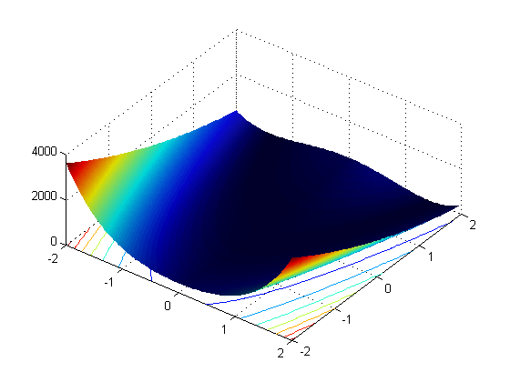
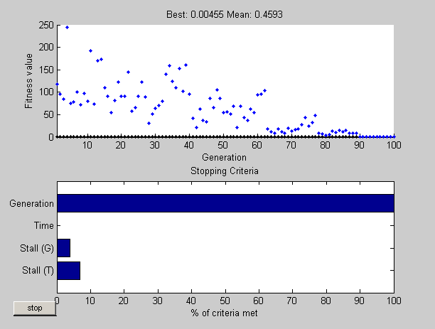
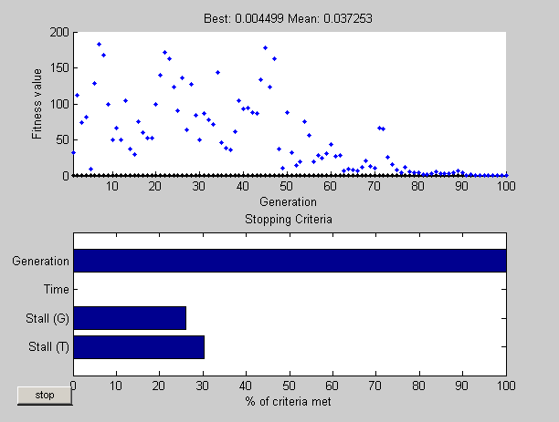

This demo uses a hybrid scheme to optimize a function using the Genetic Algorithm and another optimization method. GA can reach the region near an optimum point relatively quickly, but it can take many function evaluations to achieve convergence. A commonly used technique is to run GA for a small number of generations to get near an optimum point. Then the solution from GA is used as an initial point for another optimization solver that is faster and more efficient for local search.
For the demo we will optimize Rosenbrock's function (also known as Dejong's second function):
f(x)= 100*(x(2)-x(1)^2)^2+(1-x(1))^2
This function is notorious in optimization because of the slow convergence most methods exhibit when trying to minimize this function. This function has a unique minimum at the point x* = (1,1) where it has a function value f(x*) = 0.
We can view the code for this fitness function.
type dejong2fcn.m
function scores = dejong2fcn(pop)
%DEJONG2FCN Compute DeJongs second function.
%This function is also known as Rosenbrock's function
% Copyright 2004 The MathWorks, Inc.
% $Revision: 1.1.4.1 $ $Date: 2004/04/04 03:24:35 $
scores = zeros(size(pop,1),1);
for i = 1:size(pop,1)
p = pop(i,:);
scores(i) = 100 * (p(1)^2 - p(2)) ^2 + (1 - p(1))^2;
end
We can use the function PLOTOBJECTIVE in the toolbox to plot the function DEJONG2FCN over the range = [-2 2;-2 2].
plotobjective(@dejong2fcn,[-2 2;-2 2]);
To start, we will use the genetic algorithm, GA, alone to find the minimum of Rosenbrock's function. We need to supply GA with a function handle to the fitness function dejong2fcn.m. Also, GA needs to know the how many variables are in the problem, which is two for this function.
FitnessFcn = @dejong2fcn; numberOfVariables = 2;
Some plot functions can be selected to monitor the performance of the solver.
options = gaoptimset('PlotFcns', {@gaplotbestf,@gaplotstopping});
We run GA with the above inputs.
[x,fval] = ga(FitnessFcn,numberOfVariables,options)
Optimization terminated: maximum number of generations exceeded.
x =
1.0335 1.0711
fval =
0.0021
The global optimum is at x* = (1,1). GA found a point near the optimum, but could not get a more accurate answer with the default stopping criteria. By changing the stopping criteria, we might find a more accurate solution, but it may take many more function evaluations to reach x* = (1,1). Instead, we can use a more efficient local search that starts where GA left off. The hybrid function field in GA provides this feature automatically.
We will use a hybrid function to solve the optimization problem, i.e., when GA stops (or you ask it to stop) this hybrid function will start from the final point returned by GA. Our choices are FMINSEARCH, PATTERNSEARCH, or FMINUNC. Since this optimization example is smooth, i.e., continuously differentiable, we can use the FMINUNC function from the Optimization toolbox as our hybrid function. Since FMINUNC has its own options structure, we provide it as an additional argument when specifying the hybrid function.
fminuncOptions = optimset('Display','iter', 'LargeScale','off'); options = gaoptimset(options,'HybridFcn',{@fminunc, fminuncOptions});
Run GA solver again with FMINUNC as the hybrid function.
[x,fval] = ga(@dejong2fcn,numberOfVariables,options)
Optimization terminated: stall generations limit exceeded.
Switching to the hybrid optimization algorithm (FMINUNC).
Gradient's
Iteration Func-count f(x) Step-size infinity-norm
0 3 0.00669628 2.3
1 15 0.0029569 0.00108747 0.0445
2 27 0.00112911 820 0.125
3 30 0.000249404 1 0.61
4 33 2.28441e-005 1 0.018
5 36 1.16621e-006 1 0.00299
6 39 2.80076e-009 1 0.00196
7 42 2.58118e-011 1 1.86e-005
8 45 2.00284e-011 1 4.3e-008
Optimization terminated: relative infinity-norm of gradient less than options.TolFun.
x =
1.0000 1.0000
fval =
2.0028e-011
The first plot shows the best and mean values of the population in every generation. The best value found by GA when it terminated is also shown in the plot title. When GA terminated, FMINUNC (the hybrid function) was automatically called with the best point found by GA so far. The solution 'x' and 'fval' is the result of using GA and FMINUNC together. As shown here, using the hybrid function can improve the accuracy of the solution efficiently.